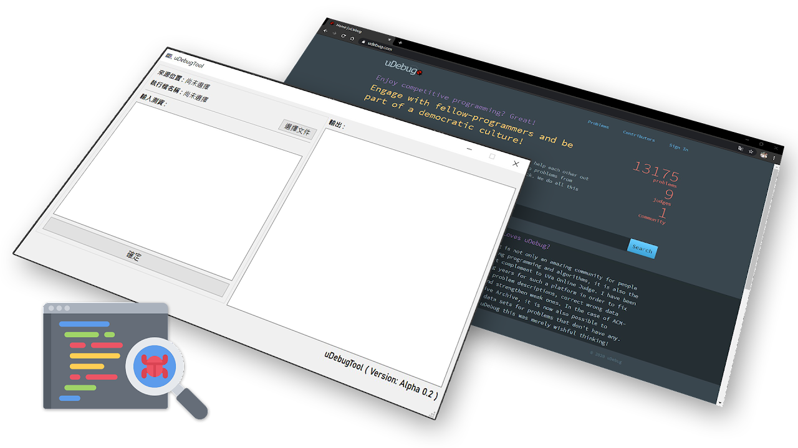

取得最新版 uDebugTool
uDebugTool 是專門設計給練習 UVa 題目的程式學習者使用的一款軟體，配合 UVa 官網提供的 uDebug 平台來為程式除錯，該軟體讓用戶免於費時地手動輸入測資，更專注於練習題目。
uDebugTool 是專門設計給練習 UVa 題目的程式學習者使用的一款軟體，配合 UVa 官網提供的 uDebug 平台來為程式除錯，該軟體讓用戶免於費時地手動輸入測資，更專注於練習題目。
版本：Release 1.0
作業系統：Windows 7 32 /64 bit 以上
處理器：INTEL® PENTIUM® 1.2GHz 同等或更高
記憶體：1GB 以上
硬碟空間：50MB 以上
環境（建議）：Microsoft Visual C++、.NET Framework
作業系統：Windows 10 64 bit 以上
處理器：Intel® Core™ i9-9900K @3.6Ghz 同等或更高
記憶體：16GB 以上
硬碟空間：100MB 以上
環境：Microsoft Visual C++、.NET Framework、MinGW